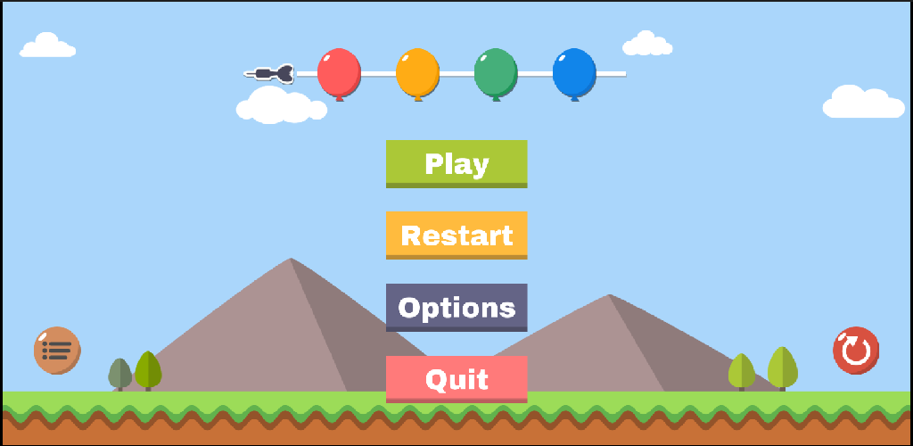
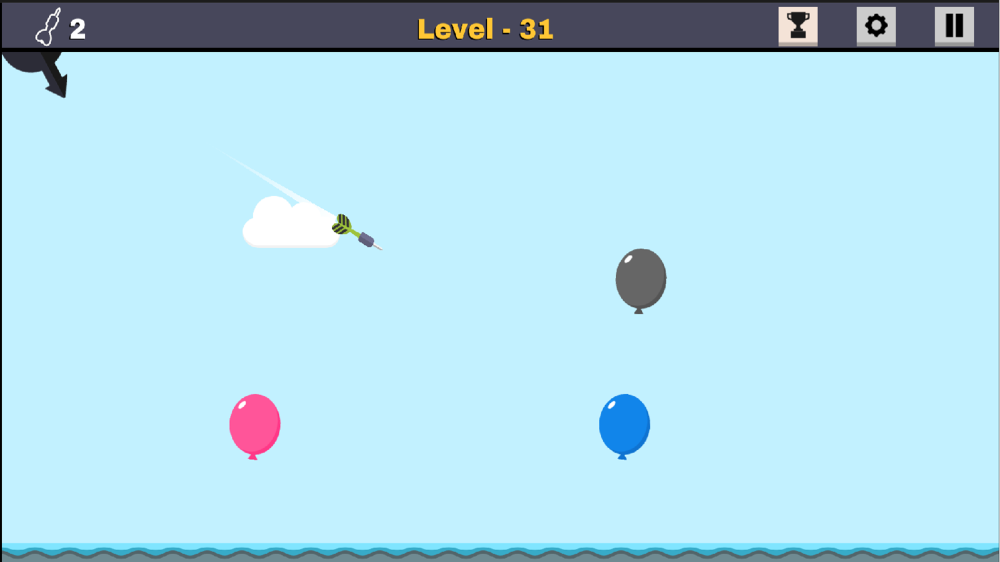
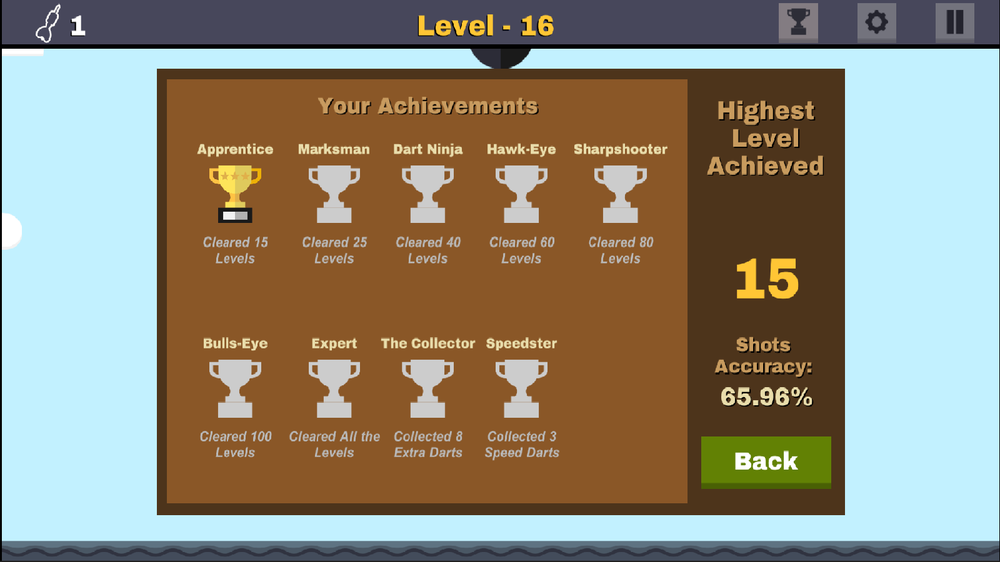

A Thrilling Balloon-Popping Adventure!
Dive into the addictive world of Pin-Em-All, the ultimate hyper-casual balloon-shooting game! Put your precision, patience, and timing to the test as you aim, shoot, and burst balloons across 130 unique and exciting levels. Whether you're waiting for the perfect moment or boosting your dart speed for a quicker shot, each level offers new challenges to keep you on your toes.
As you progress, the levels become trickier, pushing your strategy to the next level. Collect extra darts by hitting special dart balloons, and catch speed-boost balloons to accelerate your shots, helping you keep up with increasingly complex obstacles. Every shot counts—are you ready to Pin-Em-All and claim your title as the ultimate dart master?
Here are some shots from the game:
  If you have any questions or feedback, feel free to reach out:
Email: your-email@example.com
For transparency, you can view our app-ads.txt file.